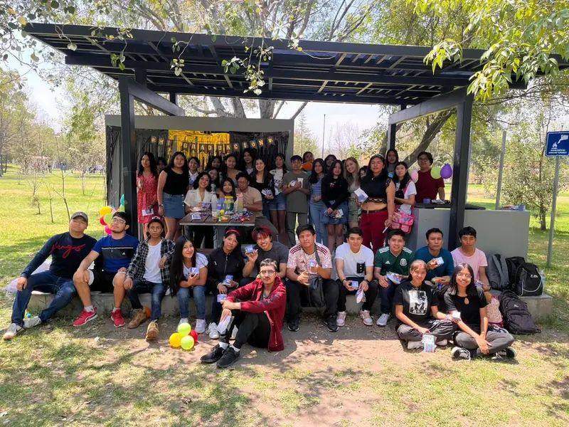

Premedicina
Salud y enfermedad, signos y síntomas, microbiología y farmacología.
PREPARACIÓN BUAP · 2027
Aprende en clase. Repasa con las grabaciones. Y lleva la práctica contigo en nuestra app de estudio.
$450 MXN · un solo pago por el curso
Primer mes de app gratis al inscribirte. Después, $35 MXN/mes, opcional.

PARA ASPIRANTES A MEDICINA
Tienes una meta. Acompáñala con preparación: clases del curso y contenido de Medicina en nuestra plataforma.
Consultar preparación para MedicinaSalud y enfermedad, signos y síntomas, microbiología y farmacología.
Bioestadística, biofísica, juicio clínico y otros temas para practicar.
Los módulos de Medicina corresponden a la app. Consulta la cobertura y el temario de las clases antes de inscribirte.
IXTLI ESTUDIO · NUESTRA PLATAFORMA
Prueba una muestra real del banco de Premedicina. Responde y revisa la explicación; así puedes conocer el contenido antes de inscribirte.
Tu primer mes empieza al activar el acceso tras confirmar la inscripción. Después, tú decides si continúas por $35 al mes.
Ya tengo cuenta Entrar a la appEsta es una demostración en la web; no guarda calificaciones ni sustituye el diagnóstico de la plataforma.
PREMEDICINA / SALUD PÚBLICA
ASÍ SE COMPLEMENTA TU ESTUDIO
Sesiones en vivo por Zoom o Meet. Consulta el horario vigente y los temas que corresponden a tu carrera.
Revisa las grabaciones y utiliza las guías para retomar un tema cuando te haga falta.
Resuelve ejercicios en la plataforma y revisa sus explicaciones. El primer mes está incluido sin costo.
UNA OFERTA CLARA
El curso se paga una sola vez. Continuar en la app después del primer mes es opcional.
Antes de pagar te compartimos el horario vigente, el temario, la fecha de término del curso y los pasos de inscripción.
CURSO ADMISIÓN BUAP 2027
Un solo pago por el curso
Las condiciones de acceso otorgadas anteriormente se respetan.
Tu punto de partida
Responde 6 preguntas de matemáticas y comprensión lectora. Conoce tus aciertos y descubre por dónde empezar a practicar.
Es una muestra orientativa, no un examen oficial ni una estimación de tus posibilidades de ingreso. No necesitas dejar tus datos.
Al terminar verás tu porcentaje de aciertos y un desglose por área.
Tu resultado en esta muestra
Continúa tu preparación en la app incluida con tu inscripción: más ejercicios, explicaciones y simulacros para practicar a tu ritmo.
Consultar curso y mes gratis de appTus respuestas se calculan en este navegador y no se guardan. El porcentaje corresponde solo a estas 6 preguntas.
ANTES DE DECIDIR
La oferta para nuevas inscripciones incluye el primer mes gratis, desde que activamos tu acceso. Después cuesta $35 MXN al mes y solo continúas si lo decides. No hacemos cargos automáticos. Los accesos anteriores conservan sus condiciones.
Puedes revisar las grabaciones disponibles. Escríbenos para conocer el horario actualizado y cómo acceder al material del grupo.
La plataforma tiene Premedicina y Razonamiento clínico avanzado, además de otros temas de práctica. Te compartimos el temario de las clases para distinguir lo que ves con las profesoras y lo que practicas en la app. Los requisitos de admisión los define la convocatoria de la BUAP.
Consulta qué clases y grabaciones están disponibles desde tu fecha de incorporación. Te confirmamos el calendario y la fecha de término antes de que pagues.
Escríbenos, revisa la información y solicita los datos de pago. Una persona verifica el pago y te indica cómo recibir tus accesos. El registro de un contacto o comprobante por sí solo no activa la app.
No. Es una muestra breve de práctica. El curso es una preparación independiente; no garantiza admisión ni representa una afiliación institucional con la BUAP.
TU META MERECE UN PRIMER PASO
Te ayudamos a revisar el temario y conocer cómo inscribirte.
Hablemos por WhatsApp+52 221 204 3005 · Curso Select